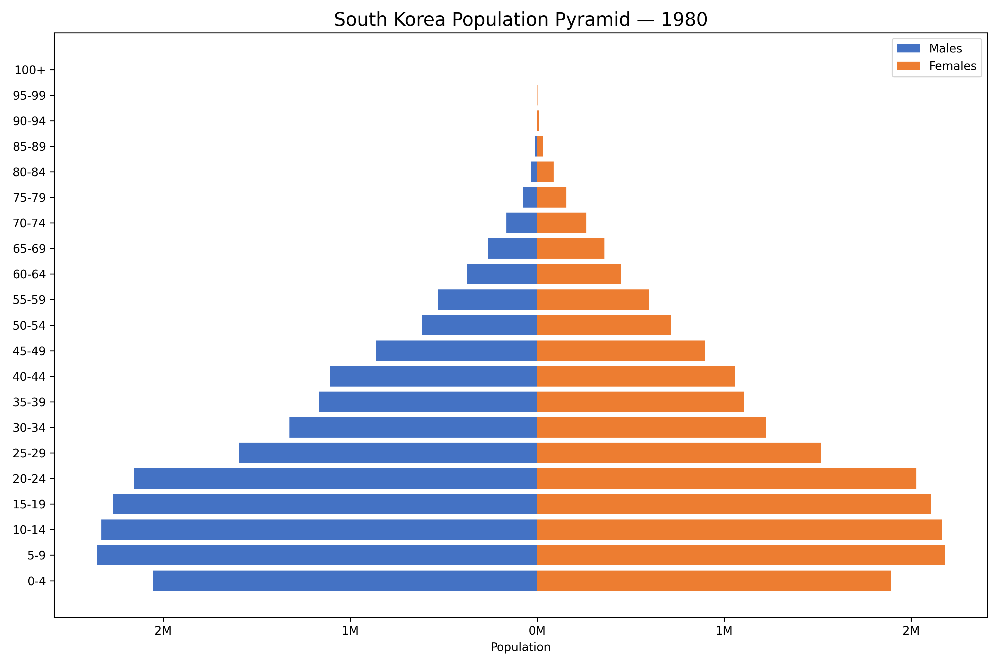
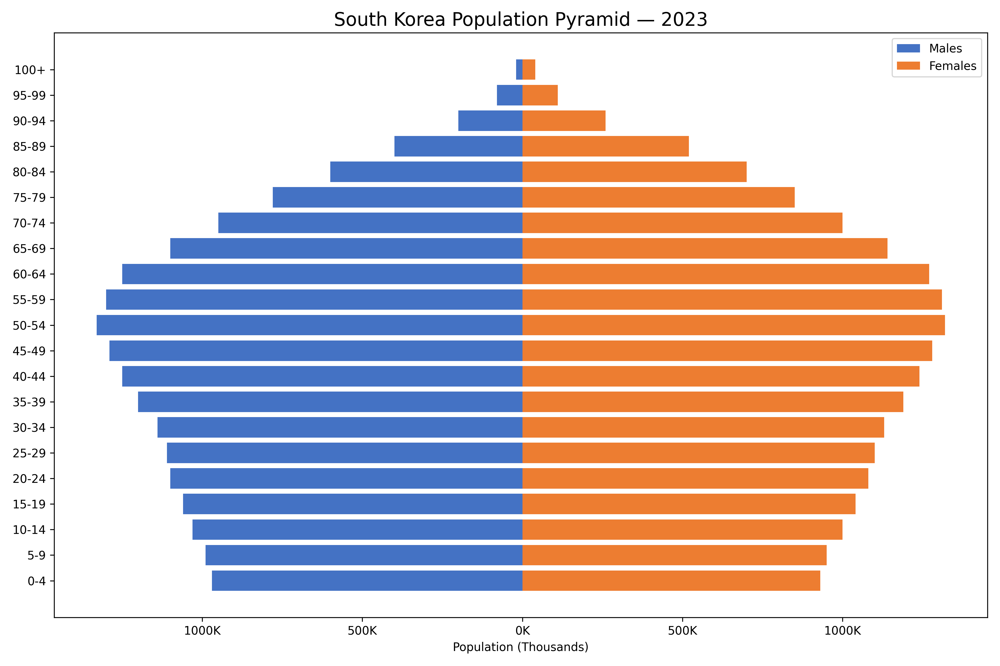
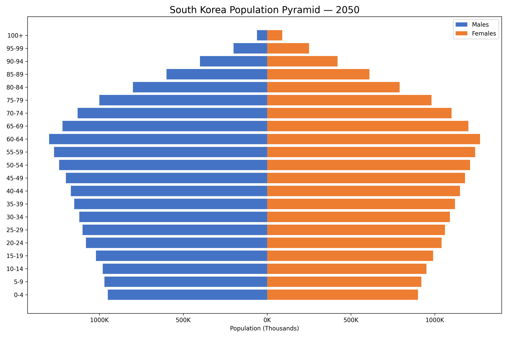

Not by war. Not by fire. But by forgetting to create life.
▼
Before the Collapse, There Was Light
The world was not always fading.
There was laughter in the fields. Cradles in the corners of every home.
Children ran toward the horizon, not away from it.
The sky was not lonely. The night was not silent.
We had futures wrapped in blankets. Names chosen before we met them.
We were alive. And we knew how to stay that way.
This Is the Grief Beneath the Grief
It’s not that they forgot to create life.
It’s that the world demanded so much of them,
there was nothing left to give.
👩🏽🍼 Women especially.
They are told:
Be career-driven. Be strong. Be beautiful. Be independent. Be self-sacrificing. Be the caregiver. Be everything.
And no one stops to ask:
“Where is she supposed to find room for life?”
💔 It’s not forgetfulness.
It’s exhaustion — a culture that breaks the vessel, then blames her for not pouring out more.
Here is the truth:
Many are not choosing a child-free life — they are surviving a system that punishes motherhood.
🌱 And in truth:
This is not a rebuke. This is not a guilt offering. This is a lament.
And a call to remake the world — so that women may rest, and life may return.
Introduction
Throughout history, humanity’s great fears have been of visible catastrophes:
war, plague, famine, and natural disaster.
Yet today, one of the clearest warnings ever given to civilization comes
not from scenes of violence or destruction, but from something nearly
invisible: the silent disappearance of future generations.
Elon Musk, a man known for daring to dream beyond Earth, has
repeatedly sounded this alarm:
Humanity is not dying because of war.
It is dying because it has stopped believing in itself.
Population collapse is already underway.
In these pages, we explore the truth, the consequences, and the call to rise again.
What follows is not merely a trend.
It is the slow unmaking of the human future.
Part 1: The Science of Civilizational Survival
Every civilization must replace itself to survive. The number is not mysterious — it is 2.1 births per woman.
Anything less is decline. Anything less is the beginning of death.
When a society falls below this threshold for multiple generations, it enters a spiral of demographic collapse —
fewer children, fewer workers, fewer mothers. An aging population. A shrinking future.
It begins quietly — in boardrooms and bedrooms — and ends in empty cities and silent nurseries.
Figure 1: Global Fertility Rate, 1960–2022. Source: World Bank, UN Population DivisionFigure 2: Age Pyramid Inversion in Developed Countries. Source: OECD, 2023
These are not abstract numbers. These are the echoes of unborn generations. These are the indicators of a world that has lost faith in its own continuation.
What happens when a people no longer believe in tomorrow?
Part 2: The Inversion of the Pyramid
China’s Collapse in Eight Frames
Once the pyramid of youth and promise, China now wears the shape of its sorrow.
Each decade tells a truth — shaped not by war, but by policy.
This is a story of abundance reversed. Of silence at the cradle.
Of a future deferred — and now, collapsing.
1950 — A Nation Reborn
After decades of war and revolution, China’s pyramid stood tall and healthy in 1950.
Wide at the base, narrow at the top — millions of young lives ready to carry the country forward.
The birthrate was high, the promise fresh, and the pain of the past buried beneath newborn breath.
1960 — The Great Famine
The Great Leap Forward became a great collapse.
Between 1959 and 1961, millions perished from famine.
The pyramid records this horror with a visible wound — a dip where a generation should be.
What policy created, absence erased.
1980 — The One-Child Policy Begins
In fear of overpopulation, China chose control.
One child per family — a mandate that reshaped culture, kinship, and the soul of the nation.
The base of the pyramid begins to narrow.
What was once abundance now learns restraint — not by choice, but by law.
1990 — The Echo Weakens
One generation later, the effects are clear.
Fewer children. More imbalance.
A gender gap emerges — not only in data, but in mourning.
Daughters disappeared. Sons outnumbered. The soul of the nation thinned by selection.
2025 — The Inversion Begins
Today’s China has more grandparents than grandchildren.
The pyramid tilts. The base is narrow.
And even though the one-child policy was repealed, it was too late.
Culture does not breed on command — it withdraws, exhausted, afraid.
2050 — The Great Aging
By mid-century, the top swells with age.
The bottom narrows further.
China becomes a nation of elders — without youth to sustain them.
Dependency soars. Innovation slows. Cities hollow out. Ghost schools remain.
2100 — The Collapse Arrives
A future of inversion.
A country top-heavy, brittle, and alone.
Population nearly halved from its peak.
The base — a whisper. The top — a cry.
No policy can undo a century of subtraction.
This is not a chart. It is a requiem.
China’s Collapse in Eight Frames
What follows is not a theory. It is a record.
Each image below reveals what policies, fear, and forgotten children have done — decade by decade.
1950 — A nation reborn, youth surging after revolution1960 — The Great Famine leaves deep scars in the youngest layers1980 — The One-Child Policy begins. The foundation begins to thin.1990 — A generation of girls disappears. Gender imbalance deepens.2025 — The point of no return. Fertility has collapsed.2050 — Inverted. The old vastly outnumber the young.2100 — The Collapse Complete. A nation with no future generation.
The Loneliness of a Billion
China is not collapsing because of famine.
Not war.
Not disease.
China is collapsing because it followed a lie —
That fewer children meant a stronger nation.
The numbers did not fall by chance.
They were pushed.
1949 — A New Dynasty
Mao Zedong rises. The People’s Republic is born.
Individual families are consumed by collective vision.
The state becomes mother, father, and future.
1959–1961 — The Great Famine
30 million souls vanish under the banner of progress.
Fields die. Trust dies. Entire provinces starve in silence.
The wombs of the survivors will never forget.
1979 — One Child
The most radical population policy in human history begins.
One child — or lose your job.
One child — or face forced abortion.
One child — or disappear.
Generations complied.
And now, there is no one left to continue.
1990s — The Girls Who Never Were
Ultrasounds and sonograms become instruments of selection.
Millions of daughters are never born.
A generation of men will grow up alone.
2008 — The Peak
China’s population crests — and begins its silent descent.
The government hides it.
But the pyramid has already cracked.
2015 — Permission Comes Too Late
The Two-Child Policy is announced.
But the people do not return.
Raising a child is now too expensive. Too stressful. Too lonely.
The soul of motherhood has been replaced with productivity reports.
2022 — Collapse Confirmed
The fertility rate falls below 1.0.
Even propaganda cannot spin it.
There are not enough strollers left to sell hope.
2100 — The Shadow of What Was
China will fall below 750 million.
More graves than cradles.
A nation built for a billion
now echoing with the silence of no one left to inherit it.
This is not a tragedy of chance.
It was scripted. Calculated. Enforced.
And now the silence is complete.
Once, the human population formed a pyramid — broad at the base,
narrow at the top. Children outnumbered the old. The young carried
the weight of the future, and the elders were few and honored.
But now, in nearly every developed nation, the pyramid has flipped.
There are more retirees than there are children.
More funerals than births.
More walkers than strollers.
And this is not a poetic metaphor.
It is mathematics.
What was once a theory is now reality. Across the globe, nations
are shrinking — not by war or famine, but by choice, cost, and exhaustion.
Why is Japan collapsing faster than Korea?
Because Japan’s low birthrate began in the 1970s, while Korea’s plummeted more recently.
The demographic wave has already broken over Japan — and is now rushing toward Korea.
South Korea
Fertility rate: 0.72 (the lowest in the world)
Population loss: ~100,000–200,000 people/year
Collapse window: Starting around 2040–2050
South Korea’s collapse will be faster and more severe than Japan’s — not because it started sooner, but because its descent is steeper. The youngest generation has almost vanished from the future.
Visual Collapse: The Pyramid Has Flipped
The charts below are not metaphors. They are tombstones for the unborn.
Japan in 1950 — a healthy pyramid with children at the baseJapan in 2023 — inverted, aging, collapsing

South Korea in 1980 — youth still present

South Korea in 2023 — vanishing children, brittle future

South Korea in 2050 — population collapse in full descent
Who Will Collapse First?
Japan is the first major country to collapse demographically.
Fertility rate: 1.3 and falling
Population shrinking by ~500,000 people/year
Has already lost millions since its 2008 peak
Twice as many elderly as children
9 million homes sit empty — ghost houses of a forgotten future
Japan is already deep into Stage 5 of demographic collapse:
not just aging, but shrinking faster than it can recover.
This is not theoretical. It’s happening now.
And Yet…
South Korea may collapse faster — once it tips.
Fertility rate: 0.72 — the lowest ever recorded in human history
Still sustained by demographic momentum — but just barely
Once aging accelerates, the fall will be sharper and swifter than Japan’s
Spiritually?
Japan’s collapse feels eerily quiet.
Not chaotic. Not violent.
Just… forgotten cradles.
Empty schools.
An entire people growing old,
without enough new breath to carry them.
The consequences are immense:
Fewer workers to fund elder care
Crushing burdens on the young
Rising taxes, shrinking innovation
Ghost towns and aging cities
And this is only the beginning.
The pyramid cannot support itself upside-down.
No civilization can thrive when it has no future to build for.
We are living in the echo of a choice made decades ago —
to postpone, to limit, to shrink.
And now the structure trembles.
China
Fertility rate: 1.1
Projection: 1.4 billion → 730 million by 2100
Collapse window: Already shrinking; severe by 2050–2070
Europe
Fertility rates: 1.2–1.6
Trend: Rural abandonment, aging nations
Collapse window: Rural collapse now; national strain by 2060
United States
Fertility rate: 1.6
Note: Immigration masks deeper decline
Collapse window: 20–30 year buffer; contraction begins after 2050
This is not a distant theory. It is a map of collapse in real time.